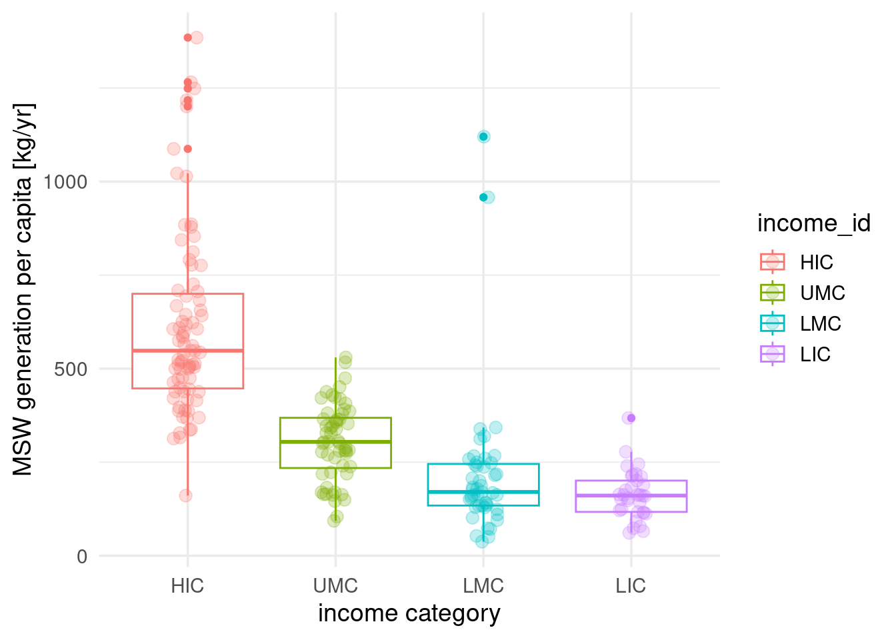

library(readr)
library(dplyr)
library(ggplot2)
library(here)Week 02 - Homework Assignment - Whitney Knopp
Data Science Lifecycle
About this exercise
This homework assignment is designed as a guided walkthrough of the data science lifecycle. Unlike future assignments where you will write code yourself, this exercise requires you to run existing code and verify each step as described in the tasks below.
As you work through each task, carefully read the step-by-step instructions and identify the corresponding elements in the provided code. This format will help you understand how I will describe coding tasks in future exercises, so pay attention to how each step connects to specific parts of the code.
Your main objectives are to: - Run each code chunk and ensure it executes without errors - Verify that each step produces the expected results
- Understand the connection between the task descriptions and the code implementation
Task 0: Load R packages
The required R Packages are loaded at the beginning of the script.
- Run the code chunk and fix any errors. (Tip: Green play button in the top right corner of the code chunk.)
Task 1: Data import
- Examine the code chunk below and verify each element:
- The CSV file ‘country_level_data_0.csv’ is imported from the ‘wk-02/data’ directory using the
read_csv()function - The assignment operator (
<-) assigns the data to an object namedglobal_waste_data - The
here()function creates a proper file path
Run the code chunk and verify it executes without errors
Render the document and fix any errors
Note: You will learn more about the use of the here() function when we look at data import in more detail.
global_waste_data <- read_csv(here("/cloud/project/data/country_level_data_0.csv"))Task 2: Data tidying (and some transformation)
- Examine the code chunk below and verify each step:
- The code starts with the
global_waste_dataobject - The pipe operator (
|>) connects theselect()function to choose specific variables - Five variables are selected: country_name, iso3c, income_id, total_msw_total_msw_generated_tons_year, and population_population_number_of_people (note the long descriptive variable names from the original dataset)
- Another pipe operator (
|>) connects therename()function - Two variables are renamed for clarity: ‘total_msw_total_msw_generated_tons_year’ becomes ‘msw_tons_year’ and ‘population_population_number_of_people’ becomes ‘population’
- The assignment operator (
<-) assigns the result toglobal_waste_data_small
Run the code chunk and verify it executes without errors
Render the document and fix any errors
global_waste_data_small <- global_waste_data |>
select(country_name,
iso3c,
income_id,
total_msw_total_msw_generated_tons_year,
population_population_number_of_people) |>
rename(msw_tons_year = total_msw_total_msw_generated_tons_year,
population = population_population_number_of_people) Task 3: Data transformation
- Examine the code chunk below and verify each step:
- The code starts with the
global_waste_data_smallobject - The pipe operator (
|>) connects themutate()function - A new variable ‘capita_kg_year’ is created by dividing ‘msw_tons_year’ by ‘population’ and multiplying by 1000 (to convert from tons to kilograms)
- Another
mutate()function converts ‘income_id’ to a factor with specific level ordering - The assignment operator (
<-) assigns the result toglobal_waste_data_kg_year
Run the code chunk and verify it executes without errors
Render the document and fix any errors
Describe in your own words what the
mutate()function does in this code-chunk
Following the first pipe, the line of code mutate() adds a new column of data called capita_kg_year that is calculated using math and other columns in the existing global_waste_data_small. The second pipe uses the factor() function within the mutate() function to change the class of the income_id column from a character to a factor with 4 possible levels: “HIC”, “UMC”, “LMC”, and “LIC”.
global_waste_data_kg_year <- global_waste_data_small |>
mutate(capita_kg_year = msw_tons_year / population * 1000) |>
mutate(income_id = factor(income_id,
levels = c("HIC", "UMC", "LMC", "LIC")))Task 4: Data visualisation
- Examine the code chunk below and verify each element:
- The
ggplot()function usesglobal_waste_data_kg_yearas the data source - Aesthetic mappings plot ‘income_id’ on the x-axis and ‘capita_kg_year’ on the y-axis
- The ‘color’ argument maps income category to different colors
geom_boxplot()creates box plots to show data distributiongeom_jitter()adds individual data points with some horizontal spreadlabs()provides custom axis labelstheme_minimal()applies a clean visual theme
Run the code chunk and verify it executes without errors
Render the document and fix any errors
Look at the plot that you created and describe what the
mutate()function achieved in the previous task
The mutate() function in the previous task was able to create/edit a column of the data frame, the MSW per capita generated annually (kg/yr). It also established 4 levels of factors in the income_id column that categorize by income level to plot as box plots.
- Describe in your own words what the ‘color’ argument inside the
aes()does
The color argument in the aes() function colors the box plots by income_id factor levels. Since there are 4 distinct and discrete levels in income_id they are all assigned a color on the box plot.
- Describe in your own words what the
labs()function does
The labs() function puts labels on the x and y axes of the plot. You are able to specify text on the x axis with x = "" and on the y axis with y = "". On the y axis, its different than labeling each of the 4 levels of income_id, which is achieved with the y = income_id in aes().
ggplot(data = global_waste_data_kg_year,
mapping = aes(x = income_id,
y = capita_kg_year,
color = income_id)) +
geom_boxplot() +
geom_jitter(width = 0.1, alpha = 1/4, size = 3) +
labs(x = "income category",
y = "MSW generation per capita [kg/yr]") +
theme_minimal(base_size = 14) 
Task 5: Complete assignment
Stage, Commit & Push to GitHub
This final section introduces the workflow you need to follow at the end of each live coding exercise, homework assignment, learning reflection. It ensures that all the changes you have made to files in this repository (folder) are synced with the version that is stored on GitHub. The steps will be described at the end of each of the files.
- Open the Git pane in RStudio. It’s in the top right corner in a separate tab.
- Stage your changes by checking appropriate box next to all files (if you select one file with your mouse, you can then highlight them all with Ctrl + A on your keyboard and check all boxes)
- Write a meaningful commit message (e.g. “Completed week 2 data science lifecycle homework”) in the Commit message box
- Click Commit. Note that every commit needs to have a commit message associated with it.
- Click Push to send your changes to GitHub.
- Go to your wk-02-USERNAME GitHub repo (where USERNAME is your GitHub username) and refresh the page. You should see your commit message next to the updated files.
Open an issue on GitHub
Once you have ensured that the Quarto document renders without errors and you have pushed all your changes to GitHub, it is time to complete the assignment by opening an issue on your wk-02-USERNAME GitHub repo (where USERNAME is your GitHub username).
- Navigate to your wk-02-USERNAME GitHub repo (where USERNAME is your GitHub username).
- Click on Issues, and then New issue button.
- Write a meaningful title in the Title field
- Tag the course instructor with using the
@sign in combination withlarnsceas the username - Add any questions or comments